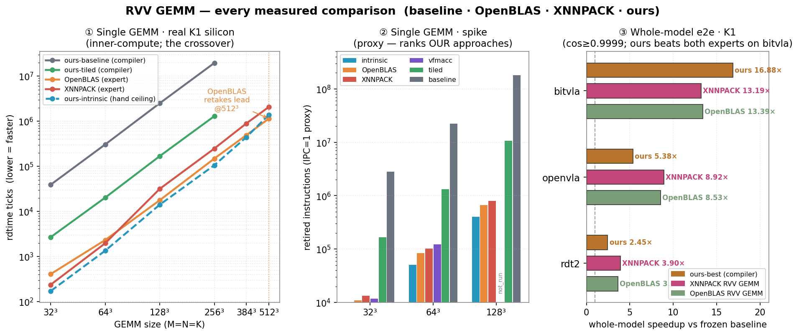
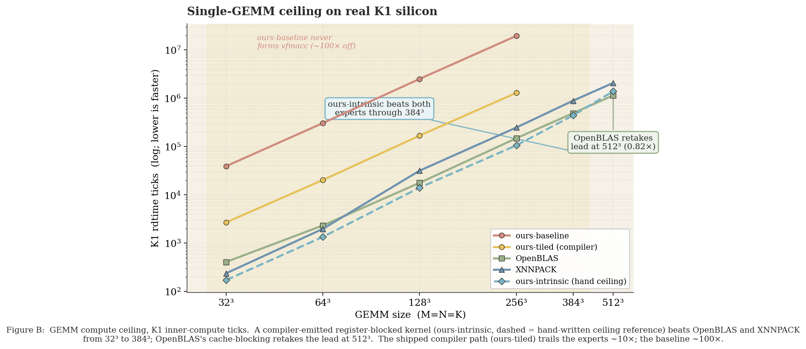
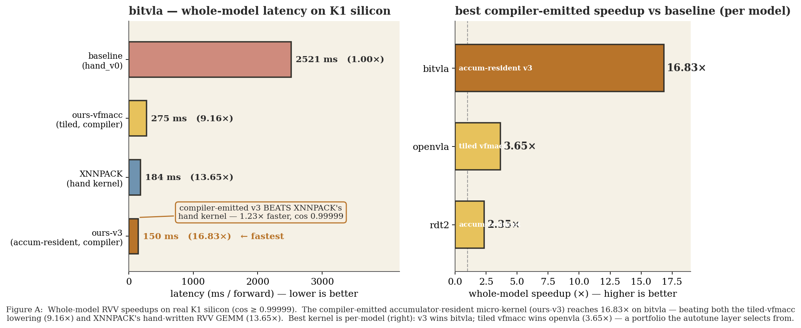
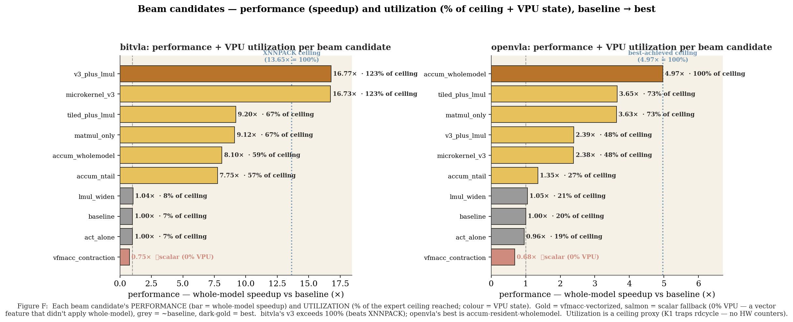
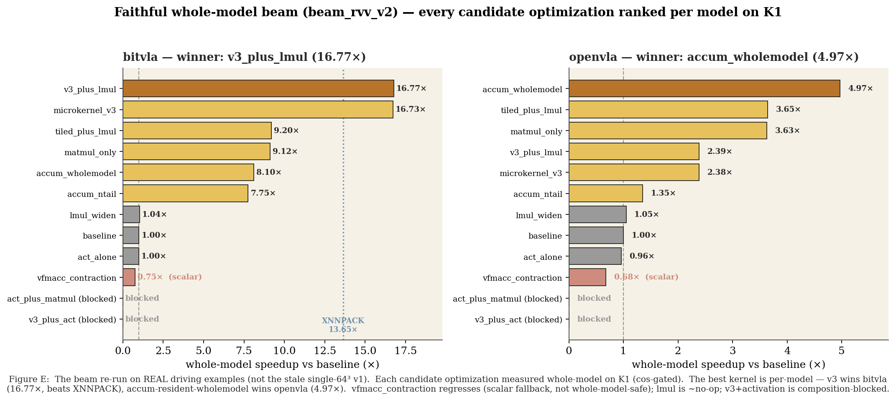
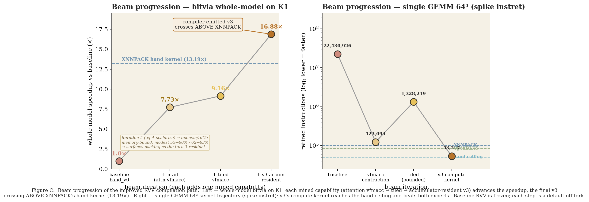
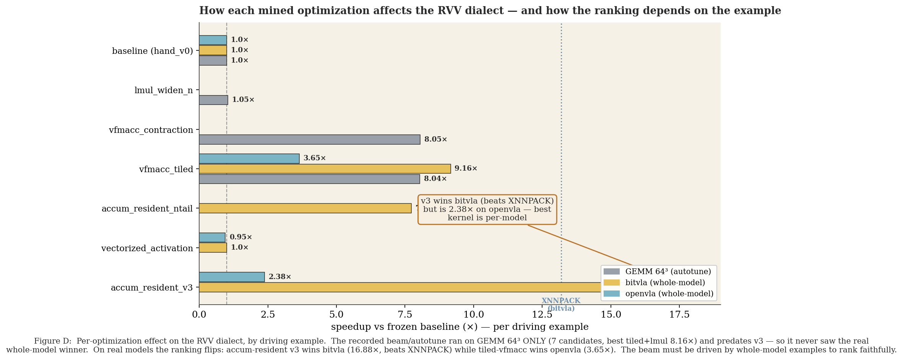
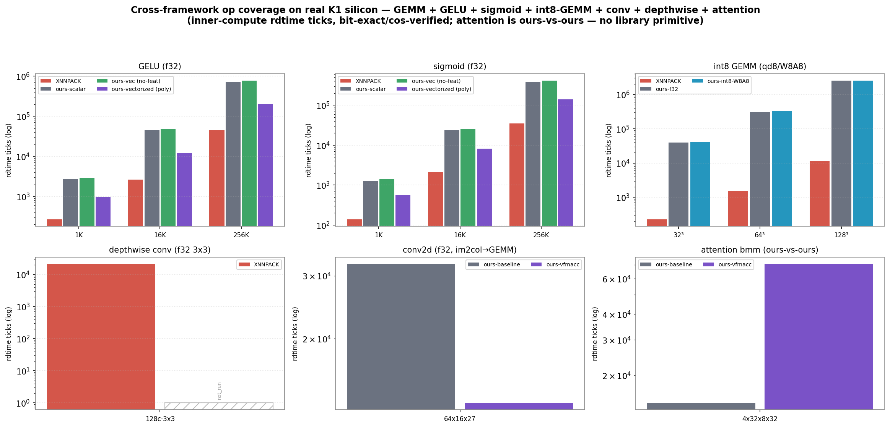

Faithful four-way comparison on the SpacemiT K1 + spike: frozen baseline RVV · our improved RVV path (per beam iteration) · OpenBLAS · XNNPACK. All numbers measured, correctness-gated (bit-exact on spike / cos ≥ 0.99999 on the board). Baseline is frozen; every improvement is a default-off fork. Hand kernels are ceiling references only. open RESULTS.html in a browser
| model | baseline | ours-tiled | ours best (beam-picked) | XNNPACK kernel-swap |
|---|---|---|---|---|
| bitvla | 2.52 s (1.00×) | 0.275 s (9.16×) | 0.150 s · v3 — 16.8× | 0.184 s (13.65×) |
| openvla | 5.87 s (1.00×) | 1.61 s (3.63×) | accum-wholemodel — 4.97× | — (BLAS/lib n/a) |
| rdt2 | 73.7 s (1.00×) | 31.4 s (2.35×) | tiled (best) | — |
The win: on bitvla the compiler-emitted accumulator-resident kernel (v3) reaches 16.8× — beating XNNPACK's hand RVV GEMM (13.65×). Best kernel is per-model (the beam selects it); cos ≥ 0.99999 throughout.

Three metric families (kept separate — not comparable): single-GEMM spike instret (proxy), K1 silicon ticks, whole-model wall.

Single-GEMM ceiling on K1: ours-intrinsic beats both experts to 384³; OpenBLAS retakes at 512³.

v3 is the fastest whole-model kernel on bitvla, beating XNNPACK; best kernel is per-model (right).

Performance + utilization per beam candidate (baseline → best): bar = speedup, % = fraction of the
expert ceiling reached, colour = VPU state (gold = vfmacc-vectorized, red = scalar fallback / 0% VPU). Utilization is a
ceiling proxy — K1 traps rdcycle, no HW counters.

beam_rvv_v2 faithful whole-model ranking (versioned experiment): every candidate ranked per model;
new openvla winner accum_wholemodel 4.97×; vfmacc_contraction regresses (scalar fallback).

Beam progression — baseline → +ntail → +tiled → +v3, the final step crossing above XNNPACK.

Per-optimization effect by driving example — the ranking flips per model (v3 wins bitvla, accum-wholemodel/tiled win openvla).

GELU / sigmoid / int8-GEMM / conv / depthwise / attention vs XNNPACK (OpenBLAS is BLAS = GEMM-only).
| candidate (optimization) | bitvla × | openvla × | VPU / note |
|---|---|---|---|
| v3_plus_lmul | 16.77 | 2.39 | vfmacc.vf (lmul no-op) |
| microkernel_v3 | 16.73 | 2.39 | vfmacc.vf · accumulator-resident |
| accum_wholemodel | 8.10 | 4.97 | vfmacc · openvla winner |
| tiled / +lmul | 9.12 / 9.20 | 3.63 / 3.64 | vfmacc |
| accum_ntail | 7.75 | 1.35 | vfmacc (attention-safe) |
| lmul_widen | 1.04 | 1.05 | ~no-op |
| vectorized_activation | 1.00 | 0.96 | vectorized, correct, neutral |
| vfmacc_contraction | 0.75 | 0.68 | scalar fallback — not whole-model-safe |
| v3+activation, act+matmul | blocked | blocked | CompositionError (2 full-replace) |
Sources: output/kernels/ceiling/*.{md,jsonl},
output/rvv_bench/k1_e2e_*.json, mined_knowledge/rvv/beam_rvv_v2_*/;
writeups docs/rvv_kernel_mining_results.md + docs/beam_rvv_v2_report.md.
Regenerate figures: .venv/bin/python scripts/plot_paper_style.py & scripts/plot_rvv_comparisons.py.